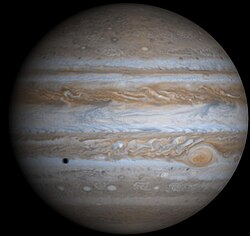
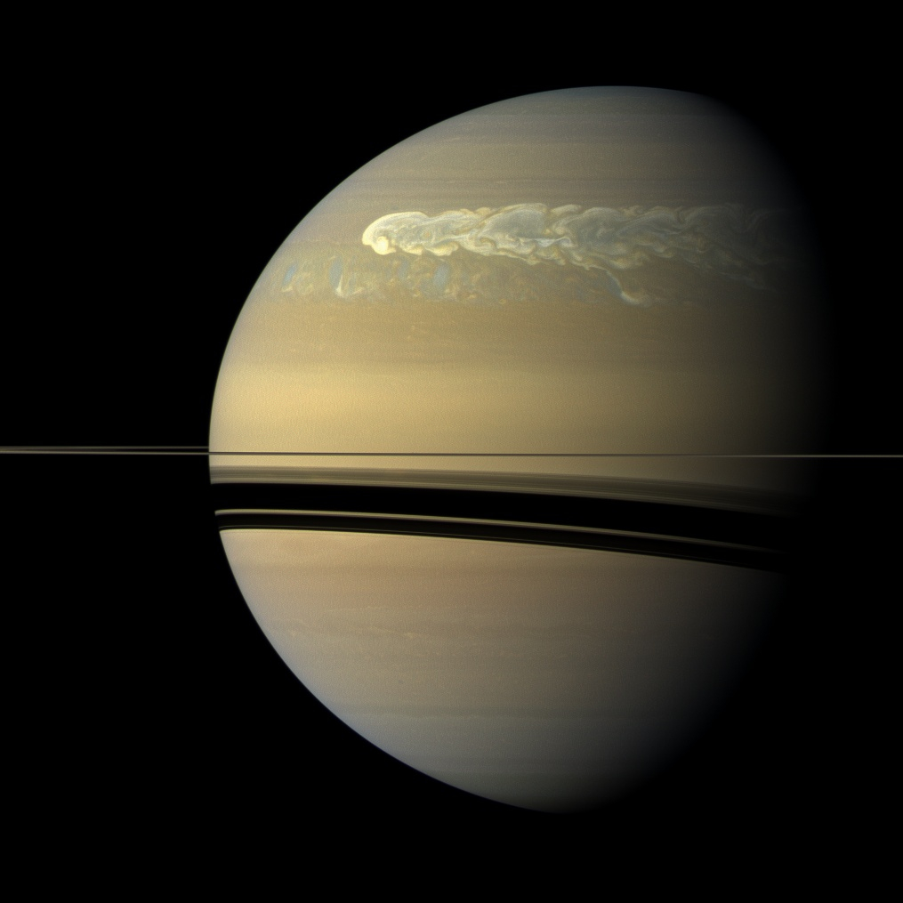

عطارد هو أقرب كوكب إلى الشمس وهو أصغر كوكب في نظامنا الشمسي.
كوكب الزهرة هو الكوكب الثاني من الشمس ويُعرف باسم "توأم الأرض" نظرًا لتشابه حجمه وكثافته

كوكب الأرض هو الكوكب الثالث من الشمس ويعتبر الكوكب الوحيد المعروف حاليًا الذي يدعم الحياة

كوكب المريخ هو الكوكب الرابع من الشمس ويُعرف أيضًا باسم "الكوكب الأحمر" بسبب لونه الذي يعود إلى أكسيد الحديد على سطحه.
كوكب المشتري هو أكبر كوكب في نظامنا الشمسي ويُعرف بكوكب الغاز.
كوكب زحل هو السادس من الشمس ويُعرف بحلقاته الجميلة، مما يجعله واحدًا من أكثر الكواكب تميزًا في نظامنا الشمسي.
كوكب أورانوس هو الكوكب السابع من الشمس ويُعرف بلونه الأزرق المميز.

كوكب نبتون هو الكوكب الثامن والأبعد من الشمس في نظامنا الشمسي.

| اسم الكوكب | عدد الأقمار | درجة الحرارة | الدوران حول الشمس |
|---|---|---|---|
| عطارد | 0 | 167 °م | 0.24 |
| الزهرة | 0 | 464 °م | 0.61 |
| الأرض | 1 | 15 °م | 1 |
| المريخ | 2 | -63 °م | 1.88 |
| المشتري | 79 | -108 °م | 11.86 |
| زحل | 83 | -138 °م | 29.46 |
| أورانوس | 27 | -197 °م | 84.01 |
| نبتون | 14 | -201 °م | 164.8 |